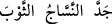
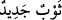

olduğunuz vakit yeniden dirileceğinizi söyleyerek haber veren kişiyi gösterelim
mi?”
“Kâfir olanlar” öldükten sonra diriltilmeyi (ba’s) inkâr eden Kureyş kâfirleri alaycı
bir şekilde kendi aralarında “şöyle dediler: “Çürüyüp paramparça olduğunuz” yâni
öldüğünüz, cesedleriniz toz toprak hâline gelecek şekilde darmadağınık ayrıldığı “vakit
yeniden dirileceğinizi” yaratılışta yenileneceğinizi “söyleyerek” çok ilginç ve
şaşılacak bir şeyi anlatarak size “haber veren kişiyi gösterelim mi?” delâlet edelim,
nişan gösterelim mi?
Onlar “__WORD__ (kişi)” sözü ile Hz. Peygamber (s.a.)’i kasdediyorlardı. Onlar alay ve
istihzâ maksadıyla bu kelimeyi nekre/belirsiz olarak kullanmışlardır.
“__WORD__ kelimesi Basralılara göre faîl vezninde fâil mânâsınadır. Kûfelilere göre
mef’ûl mânâsına, “__WORD__ (dokumacı elbiseyi kesti)” ifâdesinden gelmektedir.
el-Müfredât’ta der ki: “Elbiseyi düzeltmek maksadıyla kestiğin zaman “
”denir. “__WORD__ ifâdesinin asıl anlamı kesilmiş elbise demektir. Sonra yeni inşâ ve
ihdâs edilen her şey için kullanılmıştır. “__WORD__ ikinci yaratılışa işârettir. “__WORD__
ise gece ve gündüzdür.
8. “Acaba o, yalan yere Allah’a iftira mı etmiştir? Yoksa onda delilik mi var?”
(dediler). Hayır! Âhirete inanmayanlar azaptadırlar ve derin bir sapıklık
içindedirler.
“Acaba o,” söyledikleri şeylerde “yalan yere Allah’a iftirâ mı etmiştir?” Yâni
Muhammed (s.a.) Allah’a yalan mı uydurdu?
Bu söz de kâfirlerin sözlerindendir.
İftirâ ile yalan arasındaki fark şudur: İftirâ, kişinin yalanı kendi sözü olarak
uydurmasıdır. Yalan ise bazen başkasını taklîd şeklinde de olabilir. İftirânın mânâsı,
yalan düzmektir.
“Yoksa onda delilik mi var?” (dediler).” Yâni O’nda söylediği bu sözleri kendisine
vehmettiren ve kasıt olmadan onun diline söyleten bir delilik mi var?
Delilik, nefis ile akıl arasına giren bir mânidir.
Kâfirlerin iddiâlarına göre bu söz, yalan haberi iki çeşidine tahsis etmektedir:
Bunlardan biri kasden yalan söylemektir ki iftirâ ile kasdedilen budur. Diğeri ise
kasıtsız yalan söylemektir. Delilik ile kasdedilen budur. Bu durumda “Yoksa onda
delilik mi var?” sözünün mânâsı, ‘Yoksa iftirâ etmedi mi?’ demektir. Böylece iftirâ